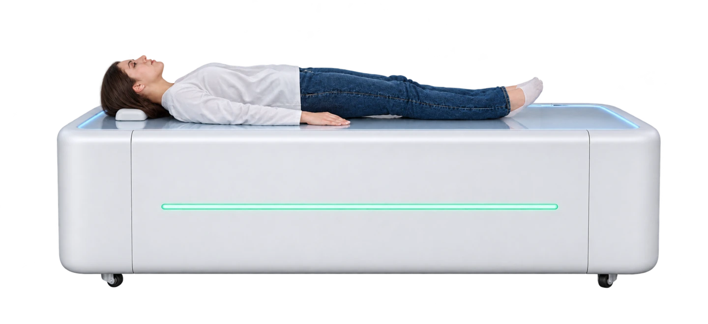

Глубокая электромагнитная стимуляция
Воздействие магнитными импульсами на мышцы и нервы в программах физиотерапии и восстановления.

Стоимость
- Одна зона
- 3 000 ₽
- Две зоны
- 5 000 ₽
- Всё тело
- 5 400 ₽
- Интенсивность магнитного поля
- 1–400 мТлМиллитесла — единица магнитной индукции: показывает величину магнитного поля.
- Частота воздействия
- 1–150 ГцГерц — единица частоты. От 1 до 150 импульсов в секунду.
- Метод воздействия
- Импульсное магнитное полеИсточник поля автоматически перемещается внутри кушетки.
- Зоны воздействия
- Одна, две или несколько зонСпециалист выбирает участки тела с учётом цели процедуры и ограничений.
Интенсивность и частоту воздействия специалист подбирает индивидуально. Более высокие значения не означают более выраженный лечебный эффект
Суть метода
Это физиотерапевтическая процедура, во время которой специальная кушетка создаёт магнитные импульсы, воздействующие на мышцы и нервы. Вы удобно располагаетесь на кушетке, а источник магнитного поля автоматически перемещается внутри неё, обрабатывая выбранные участки тела. Электроды на кожу не накладываются.
Процедура применяется в восстановительной медицине для уменьшения боли в мышцах и суставах, работы с мышечной активностью и восстановления подвижности. Специалист индивидуально подбирает режим воздействия.
Для чего применяется
Уменьшение болевых ощущений
Магнитные импульсы могут влиять на активность периферических нервов — нервов, которые связывают головной и спинной мозг с остальными участками тела и передают в том числе сигналы боли. Исследования метода показывают возможность уменьшения хронической боли в спине и других болей, связанных с мышцами и суставами. Это дополнительный инструмент восстановления, а не устранение всех причин боли.
Работа с нервно-мышечной системой
В зависимости от настроек магнитные импульсы способны активировать двигательные нервы — нервы, передающие мышцам команду на сокращение. Этот принцип используется в отдельных программах реабилитации для работы с мышечной активностью и двигательными функциями. Не каждый режим вызывает заметные сокращения.
Поддержка подвижности и восстановление после нагрузок
В комплексных программах физиотерапия может помогать уменьшить дискомфорт и создавать условия для возвращения к привычной активности. Метод не заменяет лечебную физкультуру, медицинский массаж и активную реабилитацию.
Микроциркуляция и восстановительные процессы
Влияние магнитного поля на местное кровообращение и реакции тканей изучается. Улучшение микроциркуляции (движения крови по мельчайшим сосудам тканей) указано среди направлений применения в руководстве EMW MED. Это не означает доказанного улучшения кровоснабжения каждого органа или ускоренного заживления у любого гостя.
Специализированные программы
В медицинской реабилитации магнитную стимуляцию используют также по отдельным показаниям со стороны нервной системы и мышц тазового дна. Такие программы назначаются врачом; их наличие и доступность непосредственно на курорте необходимо уточнять.
Для гостей курорта наиболее понятное направление — работа с дискомфортом в мышцах и суставах и восстановление подвижности в рамках индивидуального плана. Доказательств универсального оздоровительного эффекта для здоровых людей недостаточно.
Как работает метод
Внутри кушетки находится магнитный индуктор — источник магнитного поля. Он создаёт короткие магнитные импульсы. Изменяющееся магнитное поле способно создавать электрическое поле внутри тканей. Это явление называется электромагнитной индукцией. При определённых настройках оно позволяет активировать нервы, а через них — мышцы, без электродов на коже.
У аппарата есть две разные характеристики.
- Магнитная индукция (1–400 мТл). Миллитесла — единица измерения магнитной индукции, то есть величины магнитного поля. Этот параметр характеризует интенсивность поля, а не силу сокращения мышц и не глубину лечебного эффекта.
- Частота (1–150 Гц). Герц — единица частоты, один цикл в секунду. Для указанной частоты повторения импульсов это от одного до 150 импульсов в секунду.
Это доступные диапазоны оборудования, а не обязательные настройки. Специалист выбирает их с учётом задачи, положения источника поля и переносимости процедуры. Максимальные значения не означают максимальную пользу.
Особенность EMW MED — автоматическое перемещение индуктора внутри кушетки, позволяющее работать с выбранными участками без ручного перемещения внешней насадки. Воздействие не требует наложения электродов или контактного геля. Производитель указывает возможность проведения программ в положении сидя и лёжа.
Как проходит процедура
- Специалист уточняет цель, состояние здоровья и отсутствие противопоказаний, определяет допустимые области воздействия.
- Гость снимает металлические предметы и электронные устройства согласно инструкции и располагается на кушетке в выбранном положении.
- Специалист задаёт программу и параметры поля. Индуктор перемещается в соответствии с выбранным режимом.
- В зависимости от режима возможны покалывание, ощущение мышечной активности или отсутствие выраженных ощущений. При дискомфорте необходимо сообщить специалисту.
- По окончании оценивается самочувствие гостя.
Варианты процедуры
Одна зона — воздействие на выбранную анатомическую область.
Две зоны — работа с двумя выбранными областями.
Всё тело — название расширенной услуги в прайсе, предполагающей работу с несколькими допустимыми областями. Оно не означает воздействие на все органы или применение поля в запрещённых зонах, включая область головы и сердца. Конкретные зоны и режим определяет медицинский специалист.
Продолжительность и подготовка
Продолжительность зависит от выбранных зон и программы воздействия. Конкретное время сеанса уточняется у специалиста.
Специальных навыков не требуется. Рекомендуется удобная одежда без металлических деталей в области воздействия. Перед процедурой сообщите специалисту о наличии имплантатов, металлических конструкций, электронных устройств, хронических заболеваний, недавних травм и операций. Не начинайте процедуру до медицинского допуска.
Показания и ограничения
По инструкции системы EMW MED к направлениям применения относятся, в частности, хроническая боль в мышцах и других структурах поясницы и шеи, заболевания позвоночника, сопровождающиеся воспалением или изменениями тканей и отдельные нарушения функции органов малого таза. Выбор метода — по медицинским показаниям, не только по жалобе гостя.
Магнитная стимуляция имеет существенные ограничения. Согласно доступной редакции руководства, в числе противопоказаний:
- Беременность или подозрение на беременность.
- Электронные и металлические имплантаты: кардиостимуляторы (устройства для поддержания сердечного ритма), имплантированные дефибрилляторы, нейростимуляторы, лекарственные помпы, а также внутриматочная спираль.
- Тромбоз глубоких вен (образование сгустков крови в венах), рецидивирующий тромбофлебит (повторяющееся воспаление вены с образованием тромба).
- Онкологическое заболевание или подозрение на опухоль.
- Недавние переломы и острое воспаление в области воздействия.
- Заболевания сердца, тяжёлая недостаточность кровообращения и лёгочная недостаточность.
- Лихорадка, острые инфекции, нарушения, сопровождающиеся повышенной кровоточивостью.
В документации также указан предельный вес пациента 150 кг. Воздействие в области головы и сердца запрещено.
Это не полный перечень. Допуск определяет врач по актуальной инструкции установленного аппарата.
Наличие титанового имплантата также необходимо сообщить врачу: в доступной инструкции нет универсального исключения для таких конструкций.
В руководстве указаны возможные кратковременное головокружение и сухость во рту. При боли, неприятных мышечных сокращениях или любом ухудшении самочувствия нужно сообщить специалисту и прекратить воздействие для оценки состояния.
Частые вопросы
Это электрический ток?
Электроды на кожу не накладываются. Аппарат создаёт изменяющееся магнитное поле, которое может создавать электрическое поле внутри тканей. Поэтому воздействие отличается от обычной электростимуляции через электроды.
Почему я могу чувствовать сокращения мышц?
При определённых настройках поле возбуждает двигательные нервы, которые передают сигнал мышцам. Выраженность ощущений зависит от программы и индивидуальной чувствительности. Сильные сокращения не являются обязательным признаком эффективной процедуры.
Нужно ли раздеваться?
Воздействие может проводиться через одежду. Требования к одежде и удалению металлических деталей определяет специалист.
Это то же самое, что обычный магнит или магнитный браслет?
Нет. EMW MED создаёт управляемое импульсное магнитное поле с регулируемыми характеристиками, а не постоянное поле обычного магнита.
Можно ли сочетать с массажем и лечебной физкультурой?
Да, если это предусмотрено индивидуальной программой и нет противопоказаний. Магнитная стимуляция не заменяет лечебную физкультуру (ЛФК — специально подобранные физические упражнения) и механическое воздействие массажа.
Можно ли с металлическим имплантатом?
Необходимо сообщить о нём до записи. Доступная инструкция EMW MED относит металлические имплантаты к противопоказаниям; самостоятельно разрешать процедуру нельзя.
Достаточно ли одного сеанса?
Реакция индивидуальна. Большинство клинических исследований оценивает курсовое применение. Стойкий результат после одного посещения не гарантирован.
Научное обоснование
Система EMW MED зарегистрирована в России как медицинское изделие (регистрационное удостоверение РЗН 2024/24064). В основе метода лежит электромагнитная индукция — возникновение электрического поля под действием изменяющегося магнитного поля. Клинические исследования посвящены прежде всего уменьшению боли и восстановлению двигательных функций.
В 2026 году опубликованы работы, в которых изучалась непосредственно система EMW MED. Это позволяет опираться не только на общие исследования магнитотерапии, но и на опыт применения конкретного оборудования. При этом результаты отдельных клинических групп не доказывают универсального оздоровительного эффекта.
Научные исследования и публикации
2026 — EMW MED после замены коленного сустава искусственным (эндопротезирования)
О. В. Кебурия и соавторы, журнал «Физиотерапевт», 22(4), 5–16. В сравнительном исследовании с распределением участников по группам случайным образом участвовали 30 пациентов после операции. При добавлении EMW MED в исследованном низкоинтенсивном режиме отмечены более выраженное обезболивание и восстановление объёма движений по сравнению с другой магнитотерапией. Небольшая выборка и специализированная клиническая ситуация ограничивают обобщение результата. По отёку преимущества не установлено (по сообщению производителя).
2026 — EMW MED при болевом синдроме
Н. Г. Бадалов и соавторы. Предварительное (пилотное) исследование применения высокоинтенсивной импульсной магнитной стимуляции. В наблюдении участвовали 47 пациентов с различными болевыми синдромами. Авторы сообщают об уменьшении боли, но отсутствие контрольной группы не позволяет уверенно отделить эффект метода от других факторов.
2023 — Магнитная стимуляция периферических нервов при боли в пояснице
Объединённый статистический анализ нескольких исследований с контрольными группами (метаанализ) выявил возможное уменьшение боли. Уверенность в доказательствах оценена как низкая или очень низкая. Работа посвящена методу, а не конкретно EMW MED.
2025 — Магнитная стимуляция периферических нервов при хронической боли в мышцах и суставах
Систематический обзор выявил потенциальные положительные изменения боли и функциональных ограничений; уверенность в результатах остаётся очень низкой. Требуются более крупные исследования.
Документация оборудования
Карточка EMW MED · Регистрационное удостоверение · Руководство по применению, страницы 7–8 и 11
Вывод. Метод имеет физиологическое обоснование и клинические данные в отдельных направлениях восстановительной медицины. Доказательства долгосрочных эффектов, оптимальных программ и пользы для здоровых гостей пока ограничены.